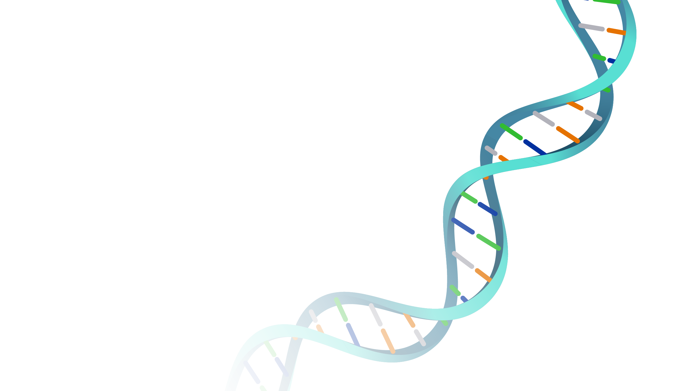

Who We Are
About the Project
A multidisciplinary initiative at the intersection of veterinary medicine, comparative biology, and the emerging science of longevity.

Founded by a Clinician
Dr. Soheyl Simaei
Veterinary Longevity was founded by Dr. Soheyl Simaei, a veterinarian and clinical entrepreneur with more than 20 years of experience in veterinary practice, clinic leadership, and professional education. Based in Lisbon, Dr. Soheyl is developing Veterinary Longevity to bridge real-world clinical practice with the emerging science of aging, prevention, and healthspan medicine in animals.
Purpose
Mission & Vision
Our Mission
Advancing Longevity Science
To generate, translate, and disseminate the science of animal aging, connecting researchers with clinicians to accelerate discoveries that extend the healthy lifespan of animals everywhere.
Our Vision
A Future Where Healthy Aging Becomes Measurable
We are working toward a future in which the biological determinants of healthy aging in animals are well characterised, measurable, and clinically actionable — enabling veterinary medicine to intervene earlier and with greater precision across the full lifespan.
Deep Dive
Research Areas
Our work spans four interconnected disciplines, each informing and strengthening the others.
We study the fundamental biology of aging at the molecular, cellular, and organismal level. Our research explores epigenetic clocks in dogs and cats, comparative genomics across long-lived species, senescent cell dynamics, and the role of inflammation in age-related decline. This work provides the foundational science that all other research areas build upon.
Translating research into clinical practice is a core mission. We are developing evidence-based longevity assessment tools, continuing education programs for veterinarians, standardised health screening protocols for senior animals, and practice management resources to help clinics build robust preventive medicine programs focused on extending healthspan.
Early detection changes outcomes. We aim to build partnerships with diagnostic labs and biotech companies to validate circulating biomarkers for cancer, kidney disease, cognitive dysfunction, and cardiovascular aging in animals. As the clinic network develops, it will enable clinical validation of novel diagnostic tests at a meaningful scale.
Our aim is to aggregate anonymised health records from participating clinics, building a meaningful longitudinal dataset on companion animal aging over time. We intend to apply machine learning, survival analysis, and causal inference methods to understand what environmental, genetic, and behavioural factors most strongly predict healthy aging, and share findings directly with clinic partners.